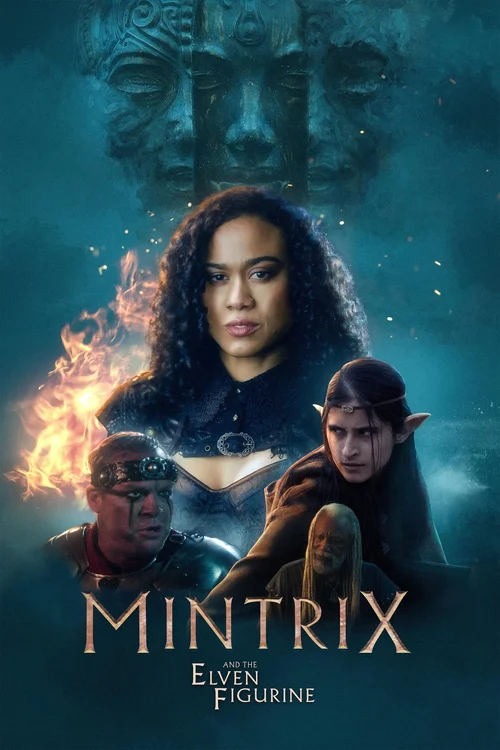
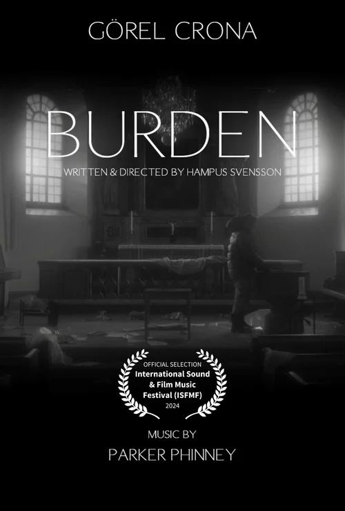
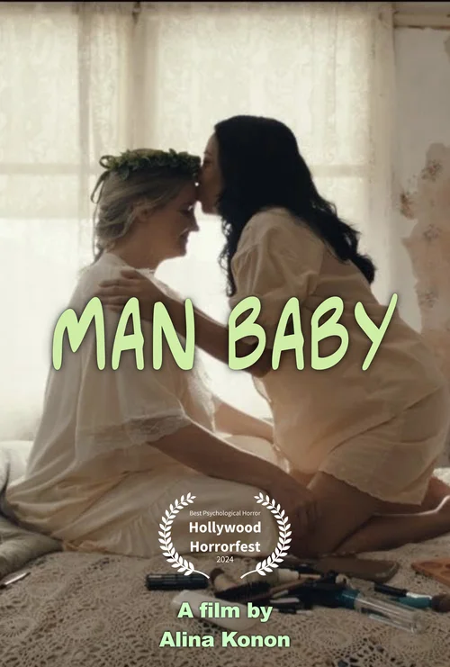
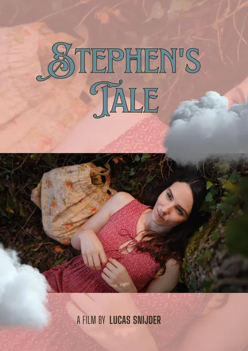
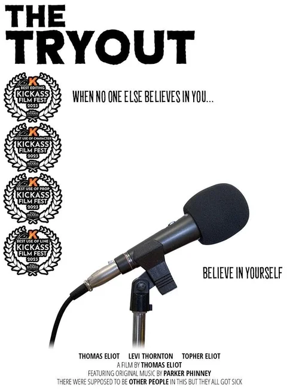
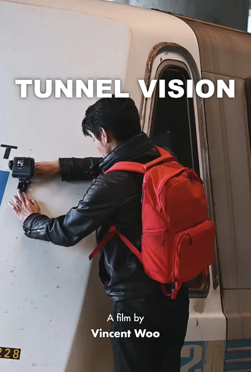
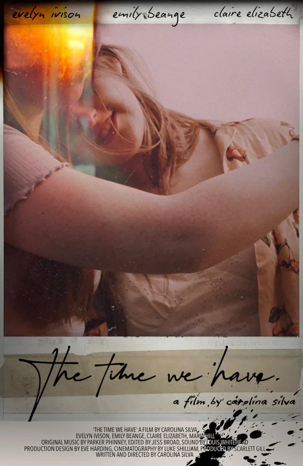
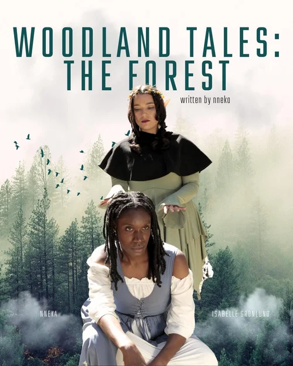
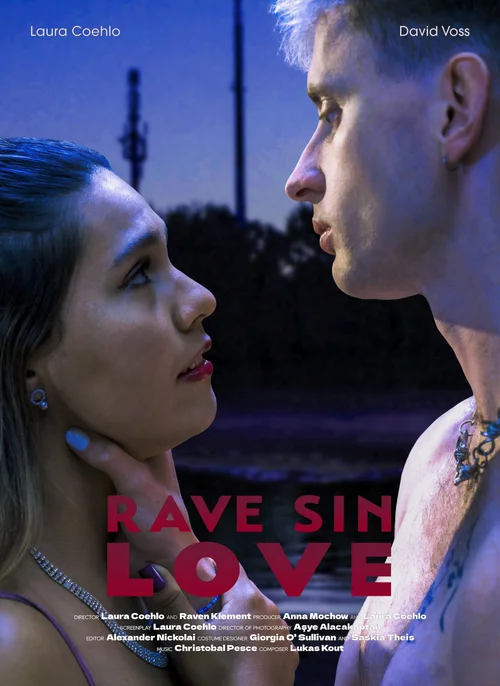
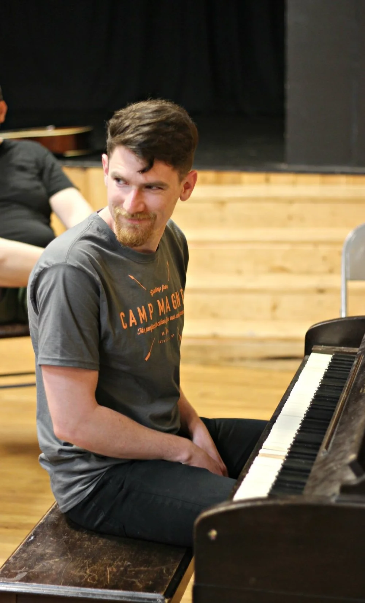
I love the process of working with a director to "twist the knobs" on a piece of music.
More hopeful! More dark! Different flavor of sad—more melancholy, less devastating. Epic but in a playful way, not a serious way.
In a lot of ways, I see myself as a filmmaker and storyteller who happens to use music as a medium. For me, media music has two jobs: 1) elevate the artistry of the piece and 2) fix things that aren't working yet—pacing, stakes, and most commonly, clarity.
I love this mix of creativity and problem-solving—it's why I'm a film/media music composer and not a concert composer or rock musician. This means I actually love getting notes—solving problems is half the fun.
Please feel free to get in touch while your project is in the early stages. Let's bat around some ideas, share some reference tracks, and see if I'm a good fit. Starting early gives us the chance to come up with a piece or two that you can show the rest of your art team and say, "it's going to feel like this!"
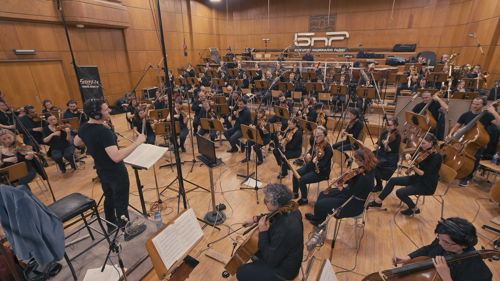
Conducting an 84-piece orchestra playing my music in Sofia, Bulgaria!
When you're making a fantasy film where your protagonist draws magic from the music of the universe, you know music is going to be key. Parker's compositions were spot on, beautifully filling out the world and subtly underscoring the inner life of the characters to enhance the storytelling and epic feel of our adventure. His instincts, attention to detail and collaborative spirit are just a few of the reasons I love working with him.Kimberly Woods — film producer
What I noticed the first time I worked with Parker was that I sent him notes on a first draft and he … actually did the notes. Like, exactly what I wanted. That sounds obvious but believe me, I've worked with other composers and it's rare for someone to actually get it like Parker does. He's become my go-to guy—quick turnarounds, always nails it within one or two tries.Vincent Woo — film director
I cannot recommend Parker highly enough. He makes the collaboration process fun and easy, patiently listening to understand what you need, and then trying out ideas and variations until you have it just right. I was extremely pleased with the final product and got lots of compliments on it! I would happily hire him again.Jason Goodman — podcast producer
Parker brought insight and inventiveness to every creative decision, leading to a score that enhanced and deepened the storytelling while also being surprising and exciting. Viewers said his score really made our film, and I agree. The next time I get a chance to work with him, I'll jump at it.Jane Leibrock — film director
What I found invaluable was Parker's ability to intuitively understand my (often inarticulate) vision and then add his own unique perspective, leading to the best possible result for the project. His score doesn't just complement the story, but creates new dimensions that reimagines it and adds complexity to the characters.Hampus Svensson — film director
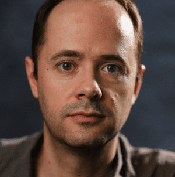
Parker has such a knack for choosing instruments that both add unique texture and voice to the music as well as totally supporting the thematic language of the overall project. His insights into the scenes are precise and nuanced, and I absolutely love working with him.Andrew Jordan — film director
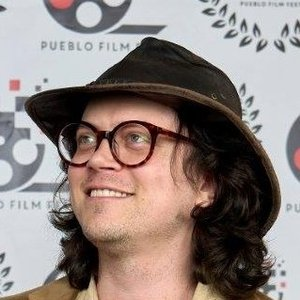
Parker was a joy to work with. Easy to collaborate with, he both took direction well and was eager to share his own creative ideas. And the final result worked perfectly, which would be impressive even without the tight time constraints we had.Thomas Eliot — film director
Parker's music brought a whole new layer of comedy to my short film. His score added so much to the story—it felt like the music truly belonged. Parker is creative, professional, and easy to work with. I highly recommend him to anyone looking for a composer who understands how to bring a film to life through music.Alina Konon — film director
With thoughtful and evocative dialogue, Parker captures the essence of your project, translating your vision into his unique musical language. His compositions and soundscapes elevate your film, achieving an aesthetic it simply cannot reach on its own.Lucas Snijder — film director
Parker made the dialogue crystal clear and seamlessly intertwined the music with the soundscape, creating an immersive audio experience that elevated Rave Sin Love to another level. A true professional and a joy to work with, delivering everything on time and with a helpful attitude!Laura Coehlo — film director
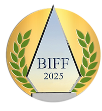
I've got plenty more. Reach out if your project has a different vibe and I'll pull some samples.
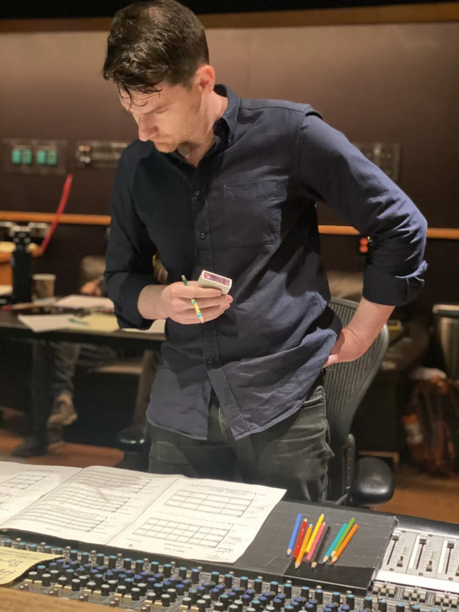
Emerging Composer Of The Year 2024 (Apulia Soundtrack Awards), Parker Phinney is an EU and USA dual-citizen composer. He loves mashing up different styles and twisting knobs to build worlds that audiences haven't seen or heard before.
His score for the Swedish short film BURDEN was recorded with a 52-piece orchestra in Sofia, Bulgaria and nominated for best score (short) at the International Sound and Film Music Festival. His score for the trailer for the Dutch film A Prayer For Two was also nominated for best score (trailer) at the same festival.
Parker did his MFA in scoring for the screen at Film Scoring Academy of Europe in Sofia, Bulgaria where he was awarded the prestigious Andy Hill Scholarship. His thesis was on fusing Bulgarian folk music styles with the classic Hollywood orchestral sound to build unique medieval fantasy worlds.
In his studies at FSAE, UCLA and beyond, Parker's been lucky enough to study with Thomas Newman (The Shawshank Redemption, American Beauty), Conrad Pope (orchestrator: Harry Potter, Jurassic Park), Mikolai Stroinski (The Witcher 3, Age of Empires IV), James Venable (Samurai Jack, Foster's Home for Imaginary Friends), and many other greats.
When not making music, Parker loves doing improv comedy, climbing, riding bicycles and playing pool.
p@rker.phinney.music
(yep, that's a real email address!)
Instagram
I find it's the best way to stay in touch—I post snippets of new music and behind-the-scenes videos about how I work.
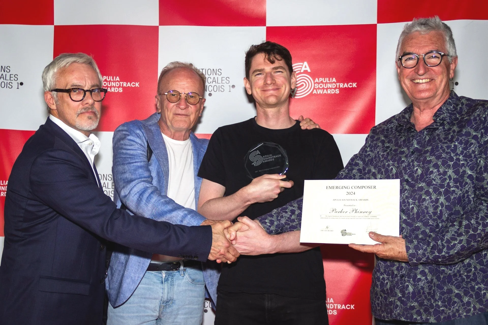